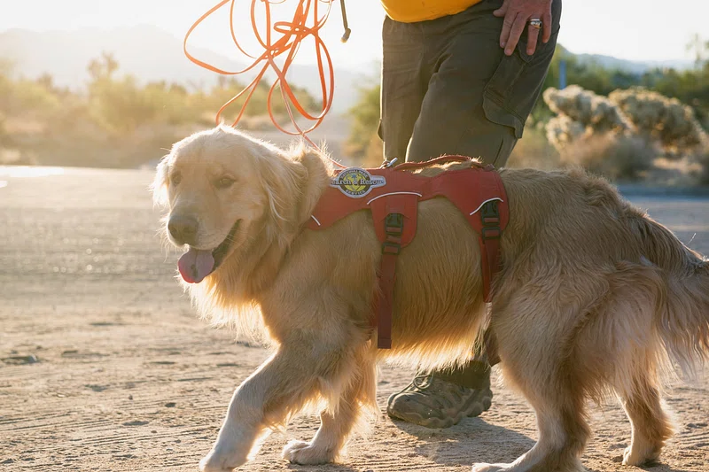
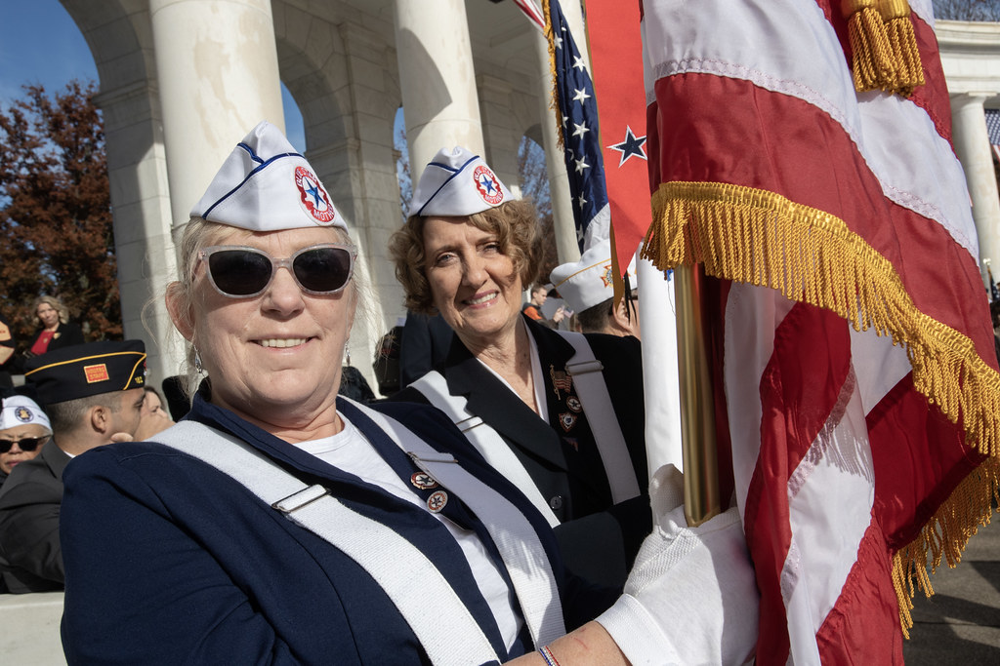
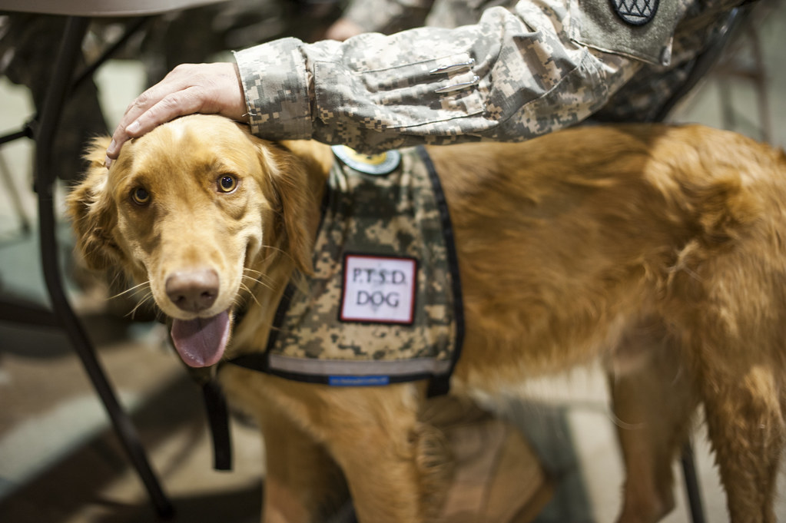

Our Story
Our community was founded after our founder, Ben, met a local USMC veteran named Mike at a coffee shop. They got to know each other before it was revealed that Mike was homeless. He was unable to find housing that would accept his government vouchers which made finding affordable housing almost impossible. This led Ben to found Salveo Communitas, so that veterans like Mike can have a community of individuals with similar values and experiences all at an affordable price.
  Image was found on Flickr
Image was found on Flickr
Image was found on Flickr